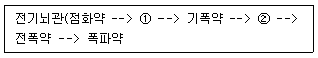

화약류관리산업기사 (2005-03-20 기출문제)
1과목: 일반화약학
1. 폭약의 배합조성 중 산소공급제는?
- 염화칼륨
- 식염, 목분
- 전분, 규소철
- 질산나트륨
(정답률: 알수없음)

2. 탄소 3g 이 산소 16g 중에서 완전연소 되었다면 연소 후 혼합기체의 부피는 표준상태에서 몇 L 인가?
- 22.4 L
- 11.2 L
- 5.6 L
- 19.8 L
(정답률: 알수없음)
3. 다음 화약류에 관한 설명으로 옳은 것은?
- 전기뇌관으로 폭발시킬 때는 도통시험을 생략할 수 있다.
- 도화선을 폐기처리할 때는 연소처리하거나 물에 적셔서 분해처리한다.
- 폭발처리를 할 때에 한하여 폐기장소에 붉은기를 계양하고, 감시원은 두지 않는다.
- 동결한 다이너마이트는 완전히 용해한후 폭발처리 하든지 또는 1000g 이하 순차 연소처리 한다.
(정답률: 알수없음)
4. 다이너마이트용 면약(綿藥)이 입하되었을 때 이 면약에 관하여 다음 시험 중 불필요한 시험은?
- 질소함량 시험
- 안정도 시험
- 교화시험(膠化試驗)
- 맹도시험
(정답률: 알수없음)
5. 화공품과 관계가 없는 것은?
- 연화
- 실포와 공포
- 공업용 뇌관
- 기폭제
(정답률: 알수없음)
6. C2H2 + 2.5O2 →2CO2 + H2O + ΔH 의 식에서 ΔH가 54.5kcal/mole 이다. 아세틸렌 10g이 폭발할때 생기는 열량은?
- 약 6 kcal
- 약 10 kcal
- 약 15 kcal
- 약 21 kcal
(정답률: 알수없음)
7. 탄광 폭발의 원인이 되는 것은?
- CO2 가스
- N2 가스
- 메탄가스
- 염소가스
(정답률: 알수없음)
8. 폭약이 폭발하면 폭굉파의 충격량이 진행하는 동안 주위에 작용하여 파괴적 효과를 나타내는 것을 의미하는 것은?
- 맹도
- 노이만 효과
- 충격량
- 충격파
(정답률: 알수없음)
9. 화약의 특징에 대한 설명으로 옳지 않은 것은?
- 폭발 시 반드시 외부에서 산소를 공급해 주어야 한다
- 가벼운 충격이나 교란작용에 의하여 화학변화를 일으킨다.
- 폭발하면 화학변화로 화약의 부피에 비하여 매우 큰 부피의 가스가 발생한다.
- 발생된 가스는 고열이므로 급격하게 팽창하여 주위의 물체에 압력을 주어 이를 파괴한다.
(정답률: 알수없음)
10. 다음 전기뇌관 발파시 폭파약을 폭파시키기 위한 화약 계열이다. ①, ②에 맞는 뜻은? (순서대로 ①, ②)

- 착화약, 발사약
- 착화약, 첨장약
- 연시약, 발사약
- 연시약, 첨장약
(정답률: 알수없음)
11. 질화에 사용되는 혼산이란 다음 중 어느 것을 뜻하는가?
- HNO3 - H2SO3
- HNO3 - HCl
- HNO3 - H3PO4
- HNO3 - H2SO4
(정답률: 알수없음)
12. 다음 화약류에서 폭약에 해당되는 것은?
- 흑색화약, 무연화약
- 뇌홍, 아지화연
- 도폭선, 도화선
- 질산바륨, 염소산칼륨
(정답률: 알수없음)
13. NG, NC 등을 포함한 화약을 유리산시험시 4 ~ 6시간 이내에 리트머스시험지가 어떤 색으로 변색하면 불량품으로 하는가?
- 파란색
- 노란색
- 붉은색
- 검은색
(정답률: 알수없음)
14. 순폭도에 대한 설명으로 옳은 것은?
- 순폭도가 클수록 불안전 폭발한다.
- 분상계 폭약은 비중이 커지면 순폭되기 쉽다.
- 약포 사이에 암분이나 탄진이 있는 경우 순폭도가 저하한다.
- 사상순폭도에 비하여 천공내(밀폐)의 순폭도가 작다.
(정답률: 알수없음)
15. 다음 질산에스테르의 화합화약류가 아닌 것은?
- 니트로글리세린(NG)
- 니트로셀룰로오스(NC)
- 니트로글리콜(Ng)
- 트리니트로톨루엔(TNT)
(정답률: 알수없음)
16. 기폭약으로 사용되는 것은?
- 질화면(窒化綿)
- T.N.T
- 아지화구리(cupric azide)
- D.D.N.P(diazodinitrophenol)
(정답률: 알수없음)
17. 니트로글리콜은 독성이 강하므로 단독으로는 니트로화 시키지 않고 다음 중 어느 것과 섞어서 니트로화 시키는가?
- 글리세린
- 에틸알콜
- 섬유소
- 전분
(정답률: 알수없음)
18. 질산에스테르가 다량으로 포함된 폭약은?
- 피크린산
- tetryl
- T.N.T
- 젤라틴 다이너마이트
(정답률: 알수없음)
19. 다음 폭약의 시험방법을 바르게 설명한 것은?
- 낙추시험은 폭약의 파괴효과를 측정하는 것이다.
- 가열시험은 폭약의 맹도를 측정하는 것이다.
- 연판시험은 폭약의 안정도를 측정하는 것이다.
- 탄동진자시험은 폭약의 위력을 측정하는 것이다.
(정답률: 알수없음)
20. 다음 중 뇌홍의 제조원료는?
- Al
- Hg
- Ag
- NaO3
(정답률: 알수없음)
2과목: 발파공학
21. 표준장약량을 결정하기 위한 Hauser의 공식에 있어서 기준 폭약을 사용하여 완전히 전색했을 경우 암석 1m3를 폭파하는데 필요한 장약량(㎏/m3)를 무엇이라고 하는가?
- 암석계수
- 폭약계수
- 전색계수
- 장약지수
(정답률: 알수없음)
22. 발파진동 경감대책으로 가장 기본적인 것은 지발당 최적장약량을 사용하여 적정한 파쇄가 이루어지도록 계획하는 것이다. 이때 지발효과가 없는 단차는?
- 20 ms이내
- 8 ms이내
- 15 ms이내
- 10 ms이내
(정답률: 알수없음)
23. 저계단식(low bench) 지발발파(delay initiation) 설계시 기준이 되는 공간격(S), 저항선(B), 계단높이(L)의 관계식은?
- S = (L+2B) / 3
- S = 2B
- S = (L+7B) / 8
- S = 1.4B
(정답률: 알수없음)
24. Austria의 진동허용 조건은 15Hz 이상의 발파에 대하여 1.9cm, 15Hz 이하에서 0.02cm의 변위로 제한하고 있다. 진동주파수가 5Hz인 발파진동의 경우 단순조화 진동으로 가정 한다면 이에 대한 허용진동속도는?
- 0.15cm/sec
- 0.⑤cm/sec
- 0.78cm/sec
- 0.63cm/sec
(정답률: 알수없음)
25. 발파진동에 관련된 설명 중 맞는 것은?
- 발파진동의 주파수는 1 Hz 정도이다.
- 발파로 인하여 발생하는 총 에너지 중에서 0.5-20%가 탄성파로 변환되어 발파진동으로 소비된다.
- 발파진동의 크기는 변위, 속도를 주로 나타내고 참고로 가속도 및 등속도를 포함하기도 한다.
- 진동기록은 수직성분, 진행성분, 가속성분으로 나눈다.
(정답률: 알수없음)
26. 디커플링(decoupling) 효과를 응용한 발파방법과 가장 밀접한 관계를 갖는 것은?
- Presplit blasting
- Preshear blasting
- Line drilling blasting
- Cushion blasting
(정답률: 알수없음)
27. 다음 중 약경에 대한 공경의 비를 가리키는 용어는?
- 디커플링지수
- 누두지수
- 프로토쟈코노프계수
- 폭약계수
(정답률: 알수없음)
28. 천공시 주의사항 중 틀린 것은?
- 천공의 각도에 주의하고, 최소저항선을 고려해서 폭약량을 될 수 있는 한 정확히 계산한다.
- 천공은 전회의 발파공을 이용한다.
- 전회 발파의 잔류폭약, 잔류뇌관의 유무에 대해서 충분히 주의하지 않으면 안된다.
- 천공의 모양 및 발파공의 배열은 화약류관리보안책임자의 지시에 의하고, 전회발파의 실적을 생각하여 현장의 암질, 암반의 절리, 암층, 균열 등에 의해서 필요한 수정을 하도록 한다.
(정답률: 알수없음)
29. 어떤 암석 발파에서 최소저항선이 2 m일 때 3.2 kg의 폭약을 사용하였다. 이 암석에서 최소저항선이 3 m일 때는 얼마의 장약량이 필요한가?
- 3.6 kg
- 5.4 kg
- 10.8 kg
- 21.6 kg
(정답률: 알수없음)
30. 다음 중 화약류 사용시 사고 미연방지 대책으로 적당하지 않은 것은?
- 발파시 예상되는 비산 방향을 미리 알아둔다.
- 불발처리는 화약류관리보안책임자가 지정한 자가 처리한다.
- 점화후의 경계를 철저히 한다.
- 뇌관과 폭약은 분리하여 운반한다.
(정답률: 알수없음)
31. 지하수가 많은 터널 또는 출수가 심한 노천광산에서 어떠한 폭약을 사용하는 것이 안전한가?
- 함수폭약, 젤라틴다이나마이트
- ANFO폭약, 도폭선
- 초안폭약, 정밀폭약
- 흑색화약, TNT
(정답률: 알수없음)
32. 다음 중 수직천공과 비교하여 경사천공의 장점이 아닌것은?
- Back break 감소
- 양호한 파쇄율
- 정확한 경사각 유지
- 느슨한 암석의 자유면 보호
(정답률: 알수없음)
33. Smooth blasting에서 주변공간격(D)과 최소저항선(W)과의 비율 D/W은 얼마가 좋은가?
- 0.3∼0.5
- 0.5∼0.8
- 0.8이상
- 0.3이하
(정답률: 알수없음)
34. 성형폭약(Shaped Charge)은 폭약의 폭발력을 특정한 방향으로 전달하기 위한 원뿔 또는 반구형 구조를 가지고 있다. 이러한 구조는 어떤 효과를 이용한 것인가?
- 노이만 효과
- 홉킨스 효과
- 하우저 효과
- 디커플링 효과
(정답률: 알수없음)
35. 각선길이 1.2m의 전기뇌관을 직렬결선하여 60m거리에서 발파하고자 한다. 100V의 전등선을 사용하여 제발시킬 때 최대 제발가능수는? (단, 모선저항은 0.022Ω/m, 뇌관저항은 0.96Ω/개, 전류는 2.5A이다.)
- 48개
- 38개
- 28개
- 18개
(정답률: 알수없음)
36. 발파에 의해 발생하는 음압 또는 파압(air pressure)의 수준 중 고막이 손상되거나 창문 유리의 일부가 깨지는 정도의 수준은?
- 180 dB
- 150 dB
- 120 dB
- 90 dB
(정답률: 알수없음)
37. 발파효과에 영향을 미치는 발파관련 변수에는 여러 가지가 있다. 다음 중 조절이 어려운 변수는 어느 것인가?
- 불연속면
- 비장약량
- 단위 천공율
- 발파의 지연초시
(정답률: 알수없음)
38. Wide space blasting(확대발파법)에 관한 설명 중 가장 거리가 먼 것은?
- 공간격/저항선의 비율을 4∼8 배로 한다.
- 비교적 균일하고 작은 크기의 파쇄버럭을 얻을 목적으로 사용한다.
- 보통의 계단식 발파에 비해 장약량을 증대시킨다.
- 천공장은 보통 계단식 발파 때와 동일하게 한다.
(정답률: 알수없음)
39. 폭약 4ton을 저장소에 저장하려고 한다. 이때 4종 보안 물건에 대한 보안거리는 얼마인가? (단, 9ton의 경우 4종에 대한 보안거리가 110m였다.)
- 78.27m
- 80.37m
- 81.57m
- 83.97m
(정답률: 알수없음)
40. 전기발파에서 발파회로의 뇌관들이 산발적으로 불발되었다. 그 원인으로 틀린 것은?
- 발파기의 출력부족
- 발파기의 규격용량이상 발파시
- 결선부가 녹슬어 있거나 흙, 암분이 묻어 있을 때
- 모선과의 결선이 누락되었을 때
(정답률: 알수없음)
3과목: 암석역학
41. 다음 중 탄소성 해석이 가능한 물체는 어떤 것인가?
- Hookean material
- Newtonian material
- Maxwell material
- St. Venant material
(정답률: 알수없음)
42. 암반의 변형성을 측정하기 위한 시험법이 아닌 것은?
- 응력 해방법
- 평판 재하법
- 동적반복시험
- 수실 시험
(정답률: 알수없음)
43. 다음은 압열인장강도 시험에 관한 설명이다. 가장 올바른 것은?
- 원판중심에서는 압축응력이 인장응력의 3배이다.
- 압축응력에 의해 시험편은 파괴된다.
- 압열인장강도는 시험편의 두께에 비례한다.
- 압열인장강도는 시험편의 습윤과는 관계가 없다.
(정답률: 알수없음)
44. 다음 보기중에서 응력을 옳게 설명한 것은?
- 물체의 표면에 접촉없이 작용하는 힘
- 물체의 중심에 작용하는 힘
- 물체표면의 단위면적에 작용하는 힘
- 물체와 외부접촉없이 작용하는 힘
(정답률: 알수없음)
45. 암석의 강성률이 4000kg/cm2이고, 포아송비(Poisson'sratio)가 0.2일 때의 영률(Young's modulus)은?
- 9600kg/cm2
- 800kg/cm2
- 6400kg/cm2
- 20000kg/cm2
(정답률: 알수없음)
46. 암석의 단축압축강도가 160MPa, 압열인장시험에서 구한 인장강도가 10MPa인 경우 전단강도를 계산하면 얼마인가?
- 10.2MPa
- 22.2MPa
- 35.7MPa
- 43.9MPa
(정답률: 알수없음)
47. 어떤 암석이 20 MPa의 인장강도를 갖는다. 이 암석을 이용하여 15cm의 직경을 갖도록 원주형 공시체를 만든 경우 이 암석에 가할 수 있는 최대 인장력은?
- 251.2 KN
- 302.3 KN
- 353.4 KN
- 404.5 KN
(정답률: 알수없음)
48. 경사각이 60˚인 건조한 사면 위에 육면체의 암석블록이 놓여 있다. 암석 바닥의 면적은 2.0m2, 암석의 무게는 3000kg, 암석 바닥과 사면 사이의 점착력은 0, 마찰각은 30˚이다. 록볼트가 사면의 지면과 40˚경사로 설치되었다. 사면의 안전율이 3이 되기 위해 필요한 록볼트의 인장력은?
- 20.0 KN
- 25.5 KN
- 30.0 KN
- 35.5 KN
(정답률: 알수없음)
49. 다음 중 암석의 역학적 성질을 설명한 것으로 틀린 것은?
- 단순 인장시험으로 얻은 인장강도는 굴곡시험으로 얻은 값보다 일반적으로 크다.
- 암석의 압축강도는 인장강도보다 10배이상 큰 경우가 많다.
- 암석의 전단강도는 일반적으로 압축강도보다는 작고 인장강도보다는 크다.
- 암석의 취성도가 클수록 일반적으로 인장강도에 대한 압축강도의 비가 크다.
(정답률: 알수없음)
50. 암석의 파괴현상을 설명할 때 시간에 의한 영향을 고려할 필요가 있다. 암석의 파괴에서 시간의 영향을 설명하는 기본적 성질은 어느 것인가?
- 탄성
- 점성
- 소성
- 취성
(정답률: 알수없음)
51. 터널설계와 관련한 암반의 RMR 분류에 활용되는 요소가 아닌 것은?
- 초기지압
- 단축압축강도
- RQD
- 불연속면의 간격
(정답률: 알수없음)
52. 다음 중 암반의 비탄성 거동을 설명한 것으로 틀린 것은?
- 응력을 제거하였을 때 영구변형이 발생한다.
- 일정하중 하에서 변형률이 변화한다.
- 일정변형이 발생할 때, 응력의 크기가 변화한다.
- 변형률 강화 현상이 발생한다.
(정답률: 알수없음)
53. 이차원 상태의 미소 평면에서 σx = 12MPa, σy = 46MPa, σxy = 0의 응력이 작용하고 있을 때, 최대 주응력의 크기는?
- 29MPa
- 34MPa
- 46MPa
- 58MPa
(정답률: 알수없음)
54. 암반에 포함된 단일 절리면의 강도를 측정하기 위하여 직접전단시험을 3회 수행하였다. 파괴 발생시의 수직응력, 전단응력이 각각 (10MPa, 13.39MPa), (20MPa, 21.78MPa), (30MPa, 30.17MPa)일 때 이 절리면의 마찰각과 점착력은?
- 30˚, 5MPa
- 30˚, 10MPa
- 40˚, 5MPa
- 40˚, 10MPa
(정답률: 알수없음)
55. 단축압축시험을 통해 얻을 수 있는 물성이 아닌 것은?
- 단축압축강도
- 영률
- 포아송비
- 전단강도
(정답률: 알수없음)
56. 다음 중 암석의 물리적 성질에 속하지 않는 것은?
- 비중
- 공극율
- 경도
- 영구변형
(정답률: 알수없음)
57. Barton 등이 절리 시험으로부터 불연속면의 전단강도를 결정하는 식을 제안하였다. 이 식에 포함되는 요소가 아닌 것은?
- 잔류 마찰각
- 절리의 기하학적 모양
- 절리의 경사 방향
- 절리 압축강도
(정답률: 알수없음)
58. 다음 중 암석 시험편의 파괴 이후의 거동을 관찰할 수 있는 시험은?
- 인장시험
- 점하중시험
- 전단시험
- 강성압축시험
(정답률: 알수없음)
59. 암석 내부에 포함된 균열의 성장에 대한 저항력을 나타내는 물질 상수는?
- 응력확대계수
- 균열계수
- 파괴인성
- 탄성계수
(정답률: 알수없음)
60. 다음 중 암석의 삼축압축시험에서 봉압의 증가에 따라 발생하게 되는 현상이 아닌 것은?
- 파괴강도의 증가
- 취성거동에서 연성거동으로 전이
- 잔류강도의 증가
- 체적변형률의 감소
(정답률: 알수없음)
4과목: 화약류 안전관리 관계 법규
61. 지하 1급 저장소 지반의 두께 기준 중 저장하는 폭약이 25톤이하일 경우 지반의 두께는 얼마 이상이어야 하는가?
- 29m
- 28m
- 26m
- 24m
(정답률: 알수없음)
62. 화약류 폐기의 기술상 기준으로 적당하지 않은 것은?
- 얼어 굳어진 다이나마이트는 완전히 녹여서 연소처리한다.
- 화약, 폭약은 조금씩 폭발 또는 연소시킨다.
- 도화선은 땅에 묻고 습윤 처리한다.
- 도폭선은 뇌관으로 폭발 처리한다.
(정답률: 알수없음)
63. 화약류 저장소에 설치하는 피뢰도선은 직선으로 설치하되 부득이 곡선으로 할 경우의 곡률반경은?
- 5㎝ 이상으로 한다.
- 10㎝ 이상으로 한다.
- 15㎝ 이상으로 한다.
- 20㎝ 이상으로 한다.
(정답률: 알수없음)
64. 화약류를 양도, 양수하고자 하는 사람은 누구의 허가를 받아야 하는가?
- 사용지 관할 경찰청장
- 양수지 관할 경찰서장
- 주소지 관할 경찰서장
- 도착지 관할 경찰서장
(정답률: 알수없음)
65. 도폭선 100킬로미터(km)를 폭약으로 환산하면?
- 1톤
- 2톤
- 3톤
- 4톤
(정답률: 알수없음)
66. 화약류관리보안책임자 면허가 반드시 취소되는 사유가 아닌 것은?
- 속임수에 의한 방법으로 면허를 받은 사실이 드러난 때
- 화약류 취급과정에서 폭발사고로 사람을 죽게 했을 때
- 면허증을 대여했을 때
- 총포·도검·화약류등단속법을 위반하여 벌금 50만원을 선고받았을 때
(정답률: 알수없음)
67. 초유폭약은 가연성가스가 몇 % 이상의 장소에서는 발파하지 말아야 하는가?
- 2.0 %
- 1.0 %
- 1.5 %
- 0.5 %
(정답률: 알수없음)
68. 다음 중 화약류관리보안책임자의 주소지가 변경되었을 때 해야 할 일은?
- 동사무소에서 15일 이내에 전입신고만 하면 된다.
- 30일 이내에 주소지 관할 경찰서에 신고해야 한다.
- 화약류관리보안책임자 면허는 지방경찰청장의 허가사항이므로 반드시 주소지 관할 지방경찰청에 30일 이내에 신고해야 한다.
- 15일 이내에 주소지 관할구청에 신고해야 한다.
(정답률: 알수없음)
69. 화약류 판매업자가 화약류를 도난당하였으나 신고를 하지않았을 때(도난신고 불이행) 행정처분 기준은?
- 효력정지 6월
- 효력정지 3월
- 효력정지 1월
- 효력정지 15일
(정답률: 알수없음)
70. 저장중인 다이나마이트 등의 약포에서 니트로글리세린이스며나와 마루바닥이 오염된 경우 니트로글리세린을 분해시키는데 사용되는 것으로 거리가 먼 것은? (단, 혼합액체로 만드는데 필요하지 않는 것)
- 식물유제
- 알코올
- 가성소다
- 물
(정답률: 알수없음)
71. 다음 용어의 정의로 틀린 것은?
- 공실이란 화약류를 제조하기 위하여 제조소 안에 설치된 건축물을 말한다.
- 위험공실이란 발화 또는 폭발할 위험이 있는 공실을 말한다.
- 정체량이란 동일 공실에 저장할 수 있는 화약류의 최대 수량을 말한다.
- 보안물건이란 화약류의 취급상의 위해로부터 보호가 요구되는 장비·시설등을 말하며, 화약류취급소는 3종보 안물건이다.
(정답률: 알수없음)
72. 도화선 1개의 길이가 1.5m 이상인 때의 동일인의 연속점화수는?
- 10 발 이하
- 13 발 이하
- 5 발 이하
- 17 발 이하
(정답률: 알수없음)
73. 총포·도검·화약류등단속법의 규정에 의한 기술상 기준으로 올바른 조치가 아닌 것은?
- 장전된 화약류를 점화하여도 그 화약류가 폭발되지 않거나 확인이 곤란한 때는 전기발파경우에는 모선에서 점화기를 제거한 후 5분이상 경과 전에는 화약류 장전지점에 사람의 접근을 금지한다.
- 불발된 천공에 고무호스로 물을 주입하여 그 물의 힘으로 메지와 화약류를 흘러나오게 하여 불발된 화약류를 회수해야 한다.
- 불발된 발파공에 압축공기를 넣어 메지를 뽑아내거나 뇌관에 영향을 미치지 않게 하면서 조금씩 장전하고 다시 점화한다.
- 각 약실의 합계가 500kg의 폭약을 15단 전기뇌관 지발발파시에도 점화후 15분 이상이 경과 전에는 발파장소에 사람의 접근을 금한다.
(정답률: 알수없음)
74. 방폭식 구조로 할 수 없는 위험공실은?
- 공업용뇌관, 전기 뇌관의 위험공실
- 도폭선의 위험공실
- 정체량 200kg이하의 폭약(기폭약을 제외한다)의 위험공실
- 정체량 600kg이하의 화약(흑색화약을 제외한다)의 위험공실
(정답률: 알수없음)
75. 다음 중 허가권자가 다른 하나는?
- 1급저장소
- 2급저장소
- 3급저장소
- 꽃불류저장소
(정답률: 알수없음)
76. 총포·도검·화약류등단속법상 화약류의 운반방법으로 옳은 것은?
- 도폭선 2,000m를 운반신고 없이 운반하였다.
- 미진동파쇄기 4,500개를 운반신고 없이 운반하였다.
- 화약류 운반개시 4시간 전에 도착지를 관할하는 경찰서장에게 화약류운반신고를 하였다.
- 화약류운반신고필증을 화약류의 사용후 반납을 고려하여 화약류의 사용종료시까지 소지하였다.
(정답률: 알수없음)
77. 지상1급 화약류 저장소의 흙둑의 경사는 몇 도이하로 설치하여야 하나?
- 75 도 이하
- 65 도 이하
- 55 도 이하
- 45 도 이하
(정답률: 알수없음)
78. 화약과 비슷한 추진적 폭발에 사용할 수 있는 것으로서 대통령령으로 정해 놓은 것이 아닌 것은?
- 산화납을 주로한 화약
- 염소산염을 주로한 화약
- 과산화바륨을 주로한 화약
- 크롬산납을 주로한 화약
(정답률: 알수없음)
79. 매월의 화약류 제조·판매, 사용상황을 다음달 몇 일까지 관할경찰서장을 거쳐 허가관청에 보고해야 하는가? (단, 화약류 제조업자 및 판매업자, 사용자)
- 5일
- 3일
- 10일
- 7일
(정답률: 알수없음)
80. 화약류를 운반하는 사람이 화약류운반신고필증을 지니지않았을 경우 벌칙은?
- 5년이하의 징역 또는 1천만원이하 벌금
- 3년이하의 징역 또는 700만원이하 벌금
- 2년이하의 징역 또는 500만원이하 벌금
- 300만원 이하의 과태료
(정답률: 알수없음)